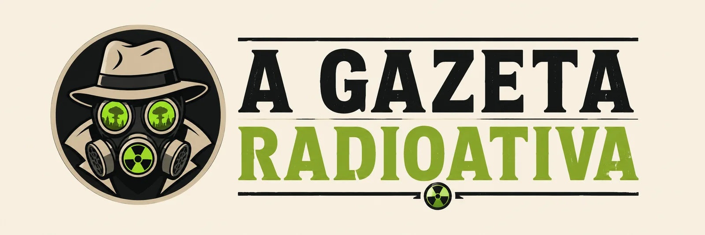

Classificados do Multiverso
3 obras para ver antes do próximo apocalipse pop

O apocalipse pop não avisa: um dia o algoritmo te recomenda tudo, no outro a fila de "para assistir" já tem o tamanho de um bunker. Antes que a radiação aumente, a Gazeta separou três obras curtas de pegar e consumir.
1. Para a aventura
Escolha algo que ainda acredita no básico: um herói relutante, um mapa, um objetivo claro e um vilão com bom carisma. Aventura boa não precisa reinventar o gênero — precisa lembrar por que a gente entrou nele. É o tipo de obra que funciona como ração de emergência: enche o tanque sem pesar.
2. Para a nostalgia
Revisite uma obra que te marcou e veja se ela aguentou o contador Geiger do tempo. Algumas envelhecem mal; outras revelam camadas que a sua versão mais nova não tinha repertório para enxergar. Nos dois casos, você sai sabendo mais sobre si do que sobre a obra.
3. Para o desconforto
Reserve um espaço para algo que te tire da zona segura — uma ficção científica densa, um terror lento, uma animação que finge ser infantil e não é. Toda dieta pop precisa de um item que não desce fácil; é ele que impede o paladar de virar piloto automático.
“Lista boa não é a maior. É a que você realmente termina antes do mundo acabar.”
Veredito da redação
Três é o número certo: cabe num fim de semana, sobra assunto para a semana e ainda deixa espaço para o acaso te recomendar a quarta. O resto a gente discute na próxima edição — se o multiverso permitir.